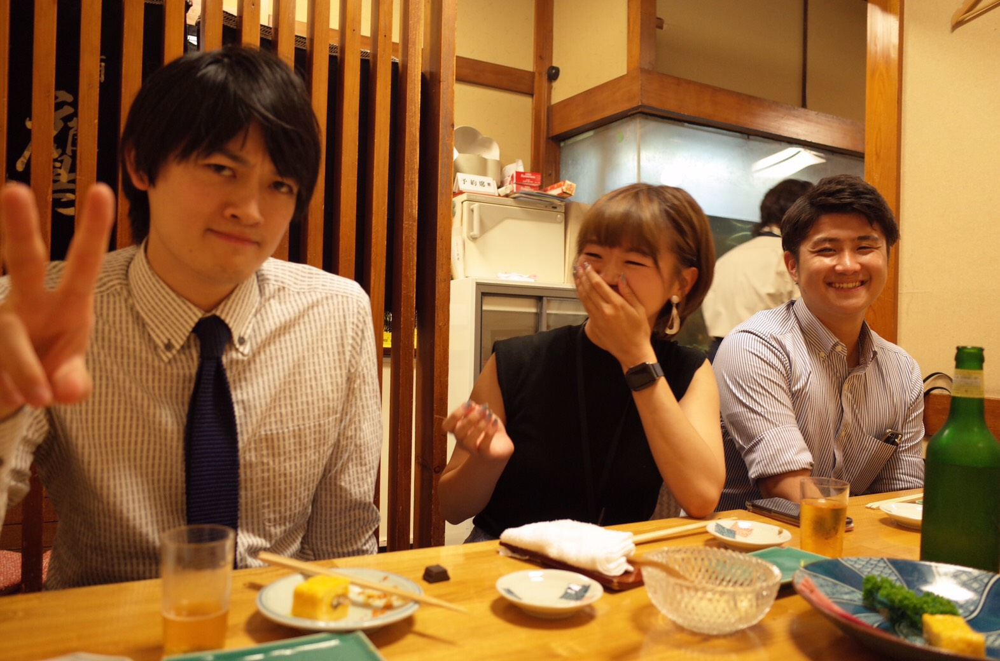

はじめに
4月より企画部に異動させていただくにあたり、
必要不可欠なHTMLやCSSの知識が私にはまったくありませんでした。
つきましては知識を身につけるために、まずは参考書を用いて勉強をしていました。
進めている中で、実際に学んだ知識定着させるためにも、一からページを作ってみようと思い、今に至ります。
今回は少しでも自分で知っていただけたら嬉しいなと思い、“自分のまとめサイト”をテーマに作ってみました。
まだまだ未熟ではありますが、ご指導いただけますと幸いです。
何卒よろしくお願いいたします。
必要不可欠なHTMLやCSSの知識が私にはまったくありませんでした。
つきましては知識を身につけるために、まずは参考書を用いて勉強をしていました。
進めている中で、実際に学んだ知識定着させるためにも、一からページを作ってみようと思い、今に至ります。
今回は少しでも自分で知っていただけたら嬉しいなと思い、“自分のまとめサイト”をテーマに作ってみました。
まだまだ未熟ではありますが、ご指導いただけますと幸いです。
何卒よろしくお願いいたします。
自己紹介
埼玉に生まれ、幼い頃は、叔母と叔父が営んでいた定食屋を手伝っていました。
その経験もあり、将来は食に携わる会社に就職したいと思っていました。
そして2017年度新卒新入社員として、株式会社ぐるなびに入社。
2017年6月〜加盟店営業部に配属
よろしくお願いいたします。
その経験もあり、将来は食に携わる会社に就職したいと思っていました。
そして2017年度新卒新入社員として、株式会社ぐるなびに入社。
2017年6月〜加盟店営業部に配属
- 1年目 谷尻ブロック 佐藤チーム
- 2年目 志水ブロック 佐藤チーム
- 3年目 梶井セクション 岡野定チーム
よろしくお願いいたします。